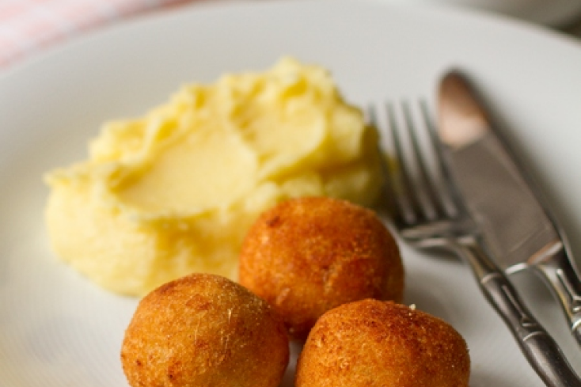

100 г
96,6 ккал
45 мин
Ингредиенты:
- Рыбное филе — 500 гр
- Белый хлеб — 150 гр
- Молоко — 150 мл
- Соль — 0,5 ч.л.
- Перец черный молотый — 2 щепотки
- Панировочные сухари или мука — 100 гр
- Масло для жарки — 100 гр
По желанию:
- Зелень - 20 гр (укроп, петрушка)
Способ приготовления:
1. Рыбное филе проверяем на наличие косточек, убираем таковые, если нашли.
2. Перекручиваем филе через мясорубку.
3. Хлеб, лучше горбушку, замачиваем в молоке.
4. Мелко рубим зелень, хлеб тщательно разминаем или перекручиваем через мясорубку.
5. Добавляем все это в рыбный фарш, солим и перчим. Хорошо размешиваем.
6. Из получившегося фарша формируем биточки. Обваливаем их в панировочных сухарях.
7. Жарим биточки на разогретой сковороде на растительном масле. Жарим на среднем огне минут по 10 каждую сторону.